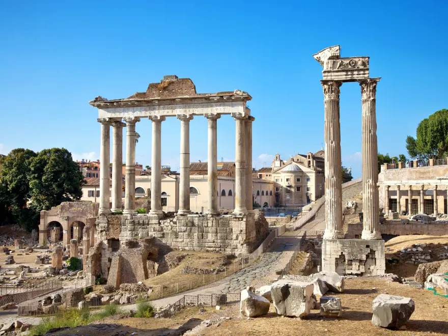
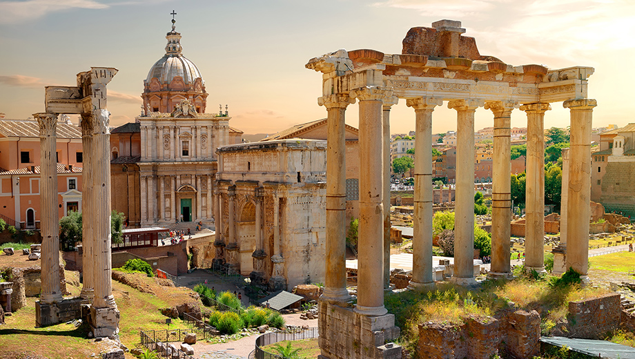
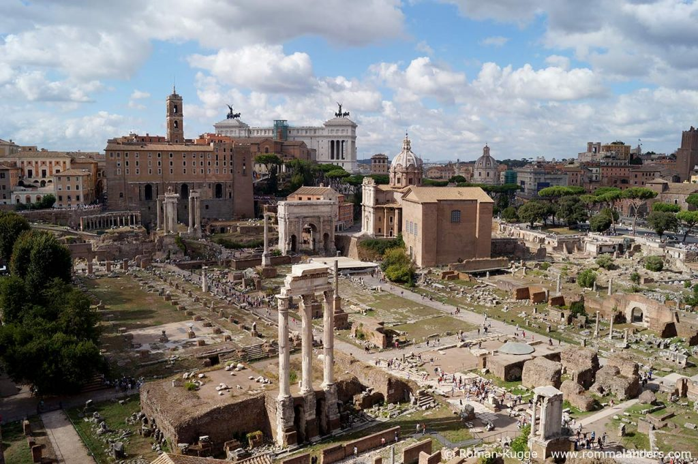

Willkommen
Auf dieser im Rahmen einer Aufgabenstellung des Geschichtsunterrichts erstellten website finden Sie detaillierte Informationen über das Forum Romanum und seine Bedeutung als Ort der Demokratie.
Zudem wird Diskutiert, ob das Forum Romanum tatsächlich ein Ort der Demokratie war und was kritisch zu betrachten ist.
Die Seite ist in drei Hauptbereiche unterteilt: Generelle Informationen, Kriterien für Demokratie und eine Argumentation mit Pro- und Contra-Argumenten sowie persönlichen Einschätzungen.
Kriterien
Politische Teilhabe, Öffentlichkeit, Mitbestimmung, Machtkontrolle, Gleichheit.
Mehr erfahren →Forum Romanum in Bildern

Rückansicht
